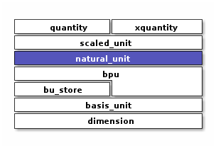

Natural Unit
A natural unit represents a product of terms, each involving a distinct basis dimension
Context
Introduction
#include <xo/unit/natural_unit.hpp>
Representation for the unit associated with a xquantity
represents a cartesian product of basis units.
constexpr implementation
limited support for fractional dimensions such as time^-1/2
{kind=link}
natural unit for a Newton (unit of force)
Class
-
template<typename Int>
class natural_unit an array representing the cartesian product of distinct basis-power-units
Quantities are represented as a multiple of a natural unit
Each bpu in the array represents a power of a basis dimension, e.g. “meter” or “second^2”.
Each bpu in an array has a different dimension id. For example dim::time, if present, appears once.
Basis dimensions can appear in any order. Order used for constructing abbreviations: will get
"kg.m"or"m.kg"depending on the orderin ofdim::distanceanddim::massinbpu_v_
Member Variables
Warning
doxygengroup: Cannot find group “natural-unit-instance-vars” in doxygen xml output for project “xodoxxml” from directory: /home/roland/proj/xo/xo-unit/.build-ccov/docs/dox/xml
Type Traits
Warning
doxygengroup: Cannot find group “natural-unit-type-traits” in doxygen xml output for project “xodoxxml” from directory: /home/roland/proj/xo/xo-unit/.build-ccov/docs/dox/xml
Constructors
Warning
doxygengroup: Cannot find group “natural-unit-ctors” in doxygen xml output for project “xodoxxml” from directory: /home/roland/proj/xo/xo-unit/.build-ccov/docs/dox/xml
Access Methods
Warning
doxygengroup: Cannot find group “natural-unit-access-methods” in doxygen xml output for project “xodoxxml” from directory: /home/roland/proj/xo/xo-unit/.build-ccov/docs/dox/xml
General Methods
Warning
doxygengroup: Cannot find group “natural-unit-methods” in doxygen xml output for project “xodoxxml” from directory: /home/roland/proj/xo/xo-unit/.build-ccov/docs/dox/xml
Conversion
Warning
doxygengroup: Cannot find group “natural-unit-conversion-methods” in doxygen xml output for project “xodoxxml” from directory: /home/roland/proj/xo/xo-unit/.build-ccov/docs/dox/xml
Comparison Functions
Warning
doxygengroup: Cannot find group “natural-unit-comparison-functions” in doxygen xml output for project “xodoxxml” from directory: /home/roland/proj/xo/xo-unit/.build-ccov/docs/dox/xml